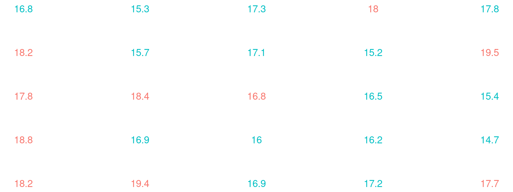
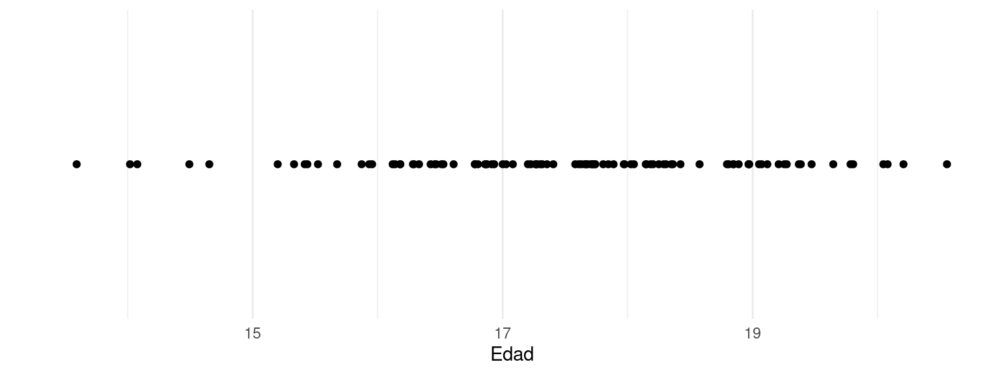
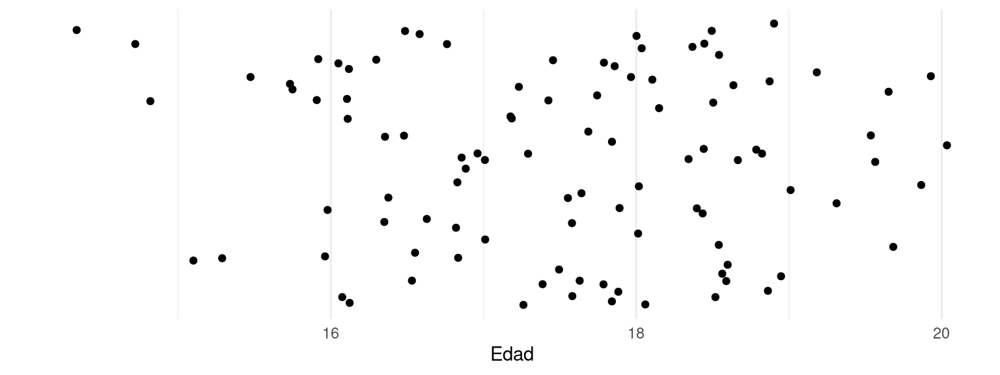
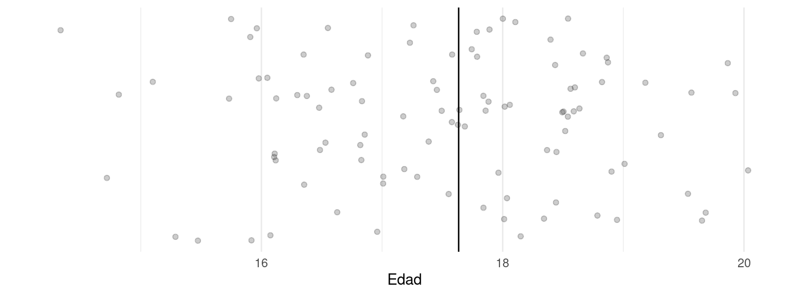
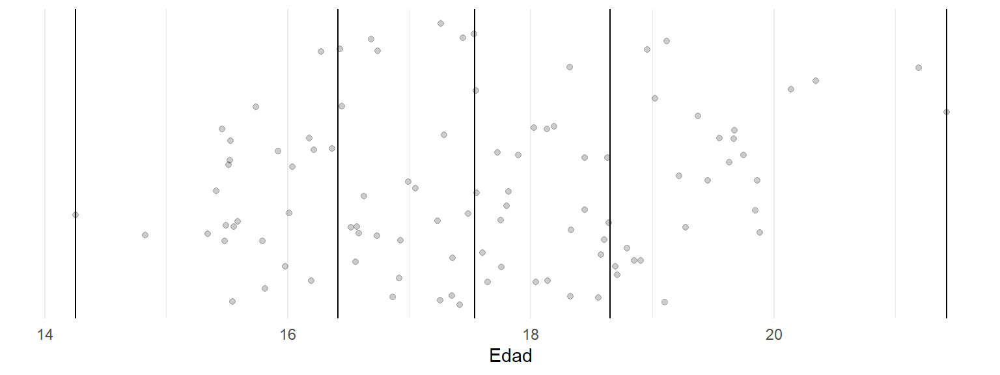
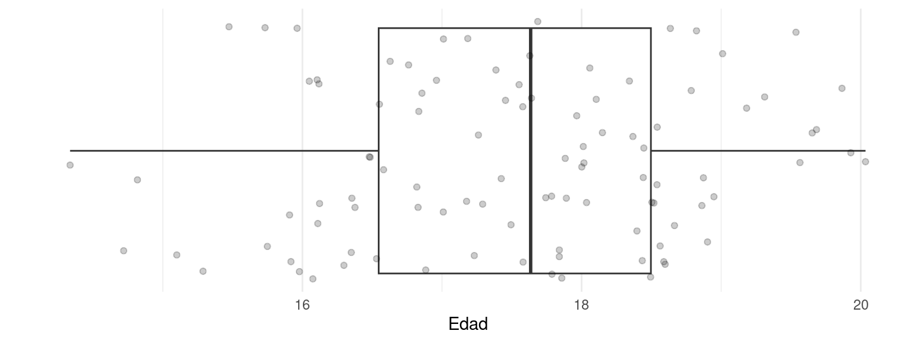
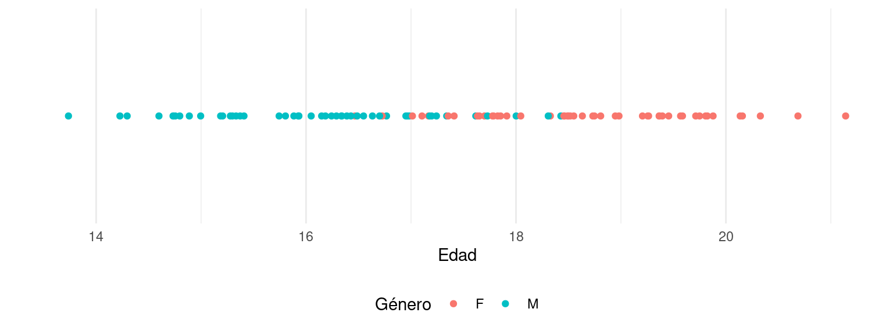
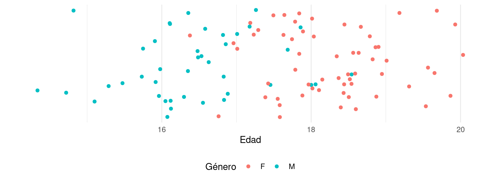
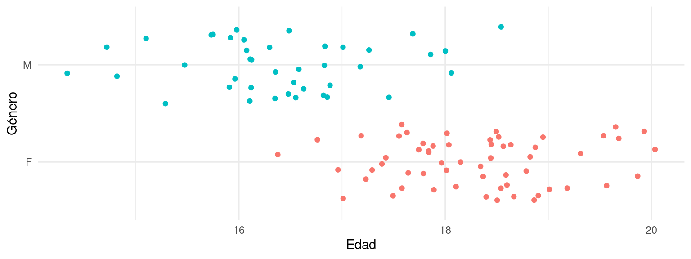
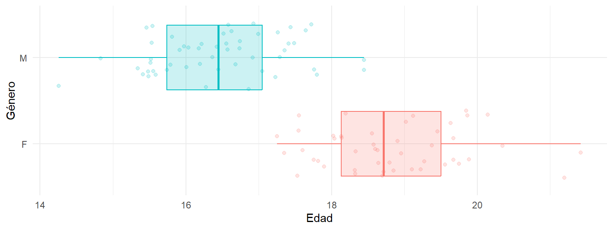

Estadística I
Introducción al mundo cuantitativo
Antecedentes
Introducción
En investigación social, el uso adecuado de métodos estadísticos para comprender la estructura y operatividad de un fenómeno determinado, constituye una ventaja del investigador en un entorno competitio de alto desempaño. Una gran variedad de procesos de planeación y evaluación de actividades gubernamentales, administrativas, económicas y financieras, se basan en resultados obtenidos mediante el análisis estadístico de los fenómenos en ellos involucrados.
Además, dado el crecimiento exponencial de las fuentes de información y el desarrollo acelerado de las herramientas tecnológicas, es apropiado disponer de una sólida fundamentación conceptual y práctica que le permita transformar y comprender grandes cantidades de información.
Presentación
Descripción del Curso
Estadística I: Estadística Descriptiva para el seminario de Técnicas Especiales de Investigación I, es un curso muy rápido e introductorio que se ofrece a los estudiantes como parte del conjunto de herramientas que hacen parte de la programación completa de la materia. El contenido de las sesiones se plantea como introducción y con el objetivo de acercar nuevamente a los estudiantes a los temas estadísticos.
Justificación
Técnicas Especiales de Investigación I es la primera de las cuatro materias del ciclo que orienta a los estudiantes en el desarrollo de sus proyectos de grado. Dado que la única estadística que se ofrece en los programas de Ciencias Sociales de Universidad Externado de Colombia se da en primer semestre, y los asistentes al seminario son de tercero y cuarto semestre, se ve la necesidad de acercarlos nuevamente a los temas generales e introductorios para que se genere la intención de soportar sus investigaciones en datos tratados estadísticamente, dado el carácter investigativo de la Facultad.
Consideraciones
Sobre los contenidos teóricos y/o conceptuales básicos del programa.
Es curso está lleno de contenidos prácticos y ligeros que no exigen a los estudiantes mayores conocimientos o destrezas sobre los temas, ni la realización de tareas o trabajos profundos por fuera del aula. Lo que se busca es impartir conocimiento y entregar herramientas básicas de estadística como apoyo a las investigaciones y documentos exigidos como proyectos de investigación.
Objetivo
General
Ofrecer herramientas de estadística descriptiva a los asistentes al seminario de Técnicas Especiales de Investigación I, como primer acercamiento y repaso de la estadística ofrecida en primer semestre, para que se vea la pertinencia y necesidad de incorporar procesamiento y análisis estadístico a los proyectos de investigación.
Específicos
Reafirmar los conceptos y conocimientos sobre estadística descriptiva
Adelantar talleres prácticos que hagan evidentes los conceptos presentados
Orientar la aplicación de estos conceptos en los proyectos particulares de cada estudiante
Metodología
Curso magistral con talleres prácticos en donde se involucren todos los asistentes mediante el desarrollo de un taller y exposición de resultados.
Material
Lecturas del módulo
Escalas de medición - Jorge Coronado Padilla
Técnicas de Muestreo sobre una Población a Estudio - Tamara Otzen, Carlos Manterola
OpenIntro Statistics - David Diez Chapter 2: Summarizing data. 2.1, 2.2.
Evaluación
La evaluación del curso se realiza mediante controles de lectura y quices de la siguiente manera:
Al iniciar la clase, se realiza el control de lectura. Un examen de máximo 15 preguntas a cerca de la lectura realizada. Este examen tiene una duración de 15 minutos y comienza puntualmente. Las personas que llegan tarde tienen menos tiempo para responder.
Al finalizar la clase se realiza el quiz. Un examen de máximo 15 preguntas a cerca de los temas vistos en clase. Este examen tiene una duración de 15 minutos y comienza 15 minutos antes de la hora de finalización de la calse. Las personas que terminan antes pueden salir.
Solo las personas que obtienen una nota mayor a 2.5 en el control de lectura, tienen la oportunidad de presentar el quiz.
La calificación total del curso se compone de la calificación de controles de lectura (10%) y quices (90%).
Adicionalmente, se proponenen algunas actividades en clase que cuentan como 0.1 de la nota final.
Evaluación
| Evaluación | Valor (%) |
|---|---|
| Controles de lectura | 10 |
| Quices | 90 |
Contenido
Introducción
Este primer tema introduce a los estudiantes en los conceptos básicos de la estadística, comenzando por una definición de estadística y su relevancia en el análisis de datos. Se exploran los tipos de variables, que incluyen variables cualitativas (nominales y ordinales) y cuantitativas (discretas y continuas). A continuación, se aborda la tipología de preguntas en encuestas, diferenciando entre preguntas abiertas, cerradas y escalas, y cómo estas se relacionan con la medición de las variables. También se presentan los tipos de encuestas, clasificadas según el método de recolección (presencial, telefónica, online, etc.), su estructura (estructuradas, semi-estructuradas, no estructuradas) y los contextos en los que se aplican, lo cual es fundamental para la adecuada recolección de datos en cualquier estudio estadístico.
Muestreo
En este tema se abordan los fundamentos del muestreo, que es el proceso de seleccionar una parte representativa de una población para inferir conclusiones sobre el total. Se explican dos grandes tipos de muestreo: probabilístico y no probabilístico. En el muestreo probabilístico, cada elemento de la población tiene una probabilidad conocida y no nula de ser seleccionado, y se estudian técnicas como el muestreo aleatorio simple, el muestreo multietápico, el muestreo estratificado y el muestreo por conglomerados. En el muestreo no probabilístico, la selección no se basa en probabilidades, sino en criterios subjetivos o conveniencia, como el muestreo por conveniencia, muestreo por cuotas o bola de nieve. Este tema profundiza en las ventajas y limitaciones de cada enfoque, subrayando la importancia de la representatividad de la muestra y cómo esto afecta los resultados y su generalización.
Estadística descriptiva para una variable
La estadística descriptiva para una variable se centra en la síntesis y descripción de los datos mediante medidas numéricas y representaciones gráficas. Se examinan las medidas de tendencia central como la media, la mediana y la moda, que resumen el comportamiento típico de la variable. También se analizan las medidas de dispersión como el rango, la varianza y la desviación estándar, que describen la variabilidad en los datos. El tema incluye el uso de gráficos como histogramas, gráficos de barras y diagramas de caja para visualizar la distribución de los datos. Estas herramientas permiten una comprensión clara de cómo los datos están distribuidos y proporcionan una base sólida para la inferencia estadística.
Estadística descriptiva para dos o más variables
Este tema amplía el análisis de la estadística descriptiva a dos o más variables, abordando técnicas para analizar relaciones y asociaciones entre ellas. Se introducen las tablas de contingencia para estudiar la relación entre dos variables cualitativas, así como las medidas de asociación como el coeficiente de correlación de Pearson y Spearman para variables cuantitativas. También se discuten las gráficas de dispersión para visualizar relaciones entre dos variables cuantitativas y cómo se puede ajustar una recta de regresión para predecir una variable en función de otra. Además, se examinan los coeficientes de correlación parcial y análisis multivariado para explorar cómo varias variables se relacionan simultáneamente, lo que permite una comprensión más profunda de las interacciones dentro de los datos.
Docente
Julián Cruz
Soy científico de datos, profesional en estadística y magíster en ciencias. Cuento con más de 12 años de experiencia demostrada en analítica y ciencia de datos. Mi perfil contempla desde liderazgo de programas de capacitación y gestión del cambio, hasta ejecución proyectos de base tecnológica. Esta experiencia me ha permitido desarrollar diferentes competencias, como la orientación al valor en toma de decisiones, la conformación y desarrollo de equipos de alto desempeño y la negociación integradora.
Narrativa
Creadores
Los creadores de herramientas, productos, servicios y experiencias deben tener un conocimiento profundo sobre el campo en el que actúan.
Usuarios
Los usuarios de herramientas, productos, servicicios y experiencias deben tener claridad sobre su finalidad y el modo de uso.
Introducción
Preámbulo
Expectativas
Problemas que vamos a tener cuando seamos grandes.
Excel
Datos grandes.
Ir a ciegas con un análisis de datos.
No saber el idioma de los datos.
No entender un modelo
La medición de los humanos
Información
¿Por qué queremos procesar información?
¿Existe la verdad?
¿Cómo se trata la verdad en la modernidad?
¿Cómo se trata la verdad en la postmodernidad?
¿Qué es la información?
¿Queremos ciencias políticas o políticas científicas?
¿Qué es un modelo científico?
Escenarios de datos
¿Qué son los datos?
¿Qué son las variables?
¿Qué son los individuos?
Primera actividad: ¿Cómo son los datos?
En muchos contextos el tema de los datos implica programación. Esto genera una impresión lejana en el ámbito de las ciencias sociales. La creación de brechas tecnológicas aleja al científico social del análisis de datos.
Es normal tener una resistencia en el desarrollo de competencias cuantitativas. Las metodologías de análisis de información conducen a lo cuantitativo de manera inevitable. El desarrollo de las habilidades no solo es indispensable para la investigación, sino para la vida profesional.
El acercamiento del científico social a lo cuantitativo comprende el uso de herramientas muy básicas.
La reconceptualización del trabajo con datos resulta necesaria.
Podemos ver los datos como puntos en el eje de la edad.

Podemos diseminarlos verticalmente para verlos mejor.

Podemos trazar líneas imaginarias para dividirlos en partes iguales.

Usando más líneas imaginarias podemos dividirlos en cuatro partes iguales.

Conformamos un gráfico de caja y bigotes.

Iniciamos de nuevo, desde el principio añadiendo el color del género.

Añadiendo espacio vertical se visualiza una tendencia.

Organizamos los datos verticalemnte por género.

Una caja para cada género es lo apropiado. ¿Podemos ver ahora la tendencia?

Tipos de datos
Tendencias
El análisis de datos no genera afirmaciones individuales. Se identifican comportamientos globales en torno a un fenómeno, que no corresponden al comportamiento de los individuos de manera puntual. Las tendencias son comportamientos globales, que los individuos acatan probablemente.
Individuos
Son unidades de análisis sobre las cuales vamos a generar un modelo. Son el sujeto de nuestra teoría.
Variables
Una variable es una característica observable o medible de un individuo, que se describe acorde a una escala de medición bien definida. Cada rasgo, aspecto o característica de una población constituye una variable.
Tipos de variable
Variables categóricas
Variables numéricas
Variables temporales
Variables categóricas
Las variables cualitativas son aquellas que se expresan en forma verbal como categorías o atributos. El género, la afiliación política, la nacionalidad y la profesión son ejemplos de variables cualitativas.
Variables numéricas
Las variables cuantitativas son aquellas que varían en términos de cantidad y se registran o expresan en forma numérica. La edad, el peso, la estatura, la temperatura y el salario son ejemplos de variables cuantitativas. A su vez, estas variables se clasifican como sigue:
Variables discretas: no admiten siempre un valor intermedio entre dos valores cualesquiera de la variable. Por ejemplo, el número de hijos de una persona es una variable cuantitativa discreta.
Variables continuas: siempre admiten un valor intermedio entre dos valores cualesquiera de la variable. Por ejemplo, el salario de un empleado medido en millones de pesos es una variable cuantitativa continua.
Medición
La medición es un proceso mediante el cual se asignan valores cuantitativos o cualitativos a los atributos de los elementos objeto de estudio, de acuerdo a unas reglas claramente preestablecidas.
Escalas de medición
Una escala de medición es un esquema específico para asignar símbolos o números con el objeto de designar los valores de una variable.
- Nominal
- Ordinal
- Intervalo
- Razón
Escalas categóricas
Escala nominal: La escala nominal es aquella donde se clasifican los individuos en categorías distintas. Consiste en agrupar los individuos de acuerdo a alguna cualidad que los hagan propios de una categoría determinada.
Escala ordinal: La escala ordinal es aquella donde se clasifican las unidades de observación en categrías. Estas categorías poseen una posición con relación a la característica que miden. Así, es posible conocer el orden de las categorías pero no la distancia que hay entre las posiciones.
Escalas numéricas
Escala de intervalo: La escala de intervalo es aquella donde se ordenan los elementos según la magnitud del atributo que representan y se proveen intervalos iguales entre las unidades de medida. No posee un cero absoluto, dado que es establecido por convención de forma arbitraria por los expertos en el área de estudio; el 0 no implica la ausencia del atributo.
Escala de razón: Por último, la escala de razón es aquella donde el punto 0 no es arbitrario y corresponde a una total ausencia de la característica observada.
Visualización
Iniciamos el tema de visualización de datos con una lectura refrescante: Gráficas para la ciencia y ciencia para las gráficas
¿Por qué visualización?
Veamos ejemplos
El ejemplo de Napoleón
Fuente: Data visualization education using the storytelling with Minard’s figurative map
Gráficos tradicionales

Escala de Cleveland y McGill

Buenas prácticas de visualización
Gráficos
Los gráficos más comunes utilizados en datos son los siguientes.
Gráfico de barras: útil para comparar categorías. Variación: gráfico de lollipop, donde se usan puntos conectados por líneas en lugar de barras.
Gráfico de torta (pastel): muestra proporciones. Variación: gráfico de dona, que es similar pero con un espacio vacío en el centro.
Histograma: representa la distribución de frecuencias de una variable cuantitativa. Variación: gráfico de densidad, que suaviza las frecuencias en una curva continua para mostrar la distribución de los datos.
Gráfico de dispersión: muestra la relación entre dos variables cuantitativas. Variación: gráfico de jitter, que separa los puntos amontonados para revelar la densidad de los datos.
Boxplot (diagrama de caja y bigotes): resume la distribución de una variable. Variación: gráfico de violín, que añade una visualización de la densidad en ambos lados del gráfico.
Gráfico de líneas: útil para visualizar tendencias a lo largo del tiempo. Variación: gráfico de áreas, donde el área bajo la línea está sombreada, destacando la magnitud.
Mapa de calor (heatmap): visualiza patrones de datos a través de variaciones de color. Variación: clustered heatmap, que agrupa los datos por similitud, facilitando la interpretación de patrones.
Gráfico de burbujas: similar al gráfico de dispersión, pero con el tamaño de las burbujas que representa una tercera variable.
Gráfico de radar (o de araña): muestra múltiples variables radiales. Variación: gráfico de radar de área, que sombrea el área debajo de los valores para enfatizar la comparación entre categorías.
Muestreo
Contexto del muestreo
Tendencias
El análisis de datos no genera afirmaciones individuales. Se identifican comportamientos globales en torno a un fenómeno, que no corresponden al comportamiento de los individuos de manera puntual. Las tendencias son comportamientos globales, que los individuos acatan probablemente.
Individuos
Son unidades de análisis sobre las cuales vamos a generar un modelo. Son el sujeto de nuestra teoría.
Población
Para cualquier pregunta que interese responder, primero es necesario dirigir la atención a un grupo particular de individuos: personas, ciudades, animales, televisores, discos rígidos, tornillos o lamparitas.
Muestra
Es un subconjunto de la población.
Representatividad
Una muestra es representativa de la población cuando todas las características importantes de la población tienen que estar en la muestra en la misma proporción que en la población.
Muestreo
¿Qué hacemos para probar la sopa? Revolvemos la olla con una cuchara, sacamos una porción -una muestra- la saboreamos y sacamos una conclusión sobre toda la sopa de la olla sin haber en realidad probado toda. Si la muestra ha sido tomada adecuadamente - sin elegir tramposamente la parte buena - tendremos una buena idea del sabor de la totalidad de la sopa. Esto se hace en estadística, más específicamente en inferencia estadística.
Los investigadores quieren averiguar algo sobre una población, pero no tienen tiempo o dinero para estudiar a todos los individuos que la conforman. Por lo tanto, ¿qué hacen? Seleccionan una cantidad pequeña de unidades muestrales de la población (esto se llama una muestra), estudian esas unidades, generalmente individuos, y utilizan esa información para sacar conclusiones sobre toda de la población.
Actividad: Investiguemos
¿Qué es un cisne negro y qué historia esconde?
Conceptos de muestreo
Marco
Diseño
Error
Tamaño
Marco muestral
El marco muestral es el conjunto de todos los elementos o unidades de la población que son accesibles para ser seleccionados en la muestra.
Este marco debe ser representativo de (preferiblemente contener toda) la población objetivo para garantizar la validez de los resultados. Un marco muestral bien definido es crucial para evitar sesgos en la selección de la muestra.
Diseño muestral
El diseño muestral es el plan que describe cómo se selecciona la muestra a partir del marco muestral. Puede incluir diferentes técnicas de muestreo, como el muestreo aleatorio simple, el muestreo estratificado, el muestreo por conglomerados, entre otros.
La elección del diseño depende de los objetivos del estudio, las características de la población y los recursos disponibles.
Es el diseño muestral lo que le da representatividad a la muestra.
Error muestral
El error muestral es la diferencia entre el valor estimado a partir de la muestra y el valor real en la población. Este error surge debido a que la muestra es solo una parte de la población y no refleja completamente su variabilidad.
El tamaño de la muestra, el diseño muestral y el método de estimación influyen en la magnitud del error muestral.
Tamaño muestral
El tamaño muestral es la cantidad de unidades que se seleccionarán del marco muestral para ser incluidas en el estudio. Un tamaño muestral adecuado es fundamental para asegurar la precisión y confiabilidad de los resultados.
La determinación del tamaño muestral depende del nivel de confianza deseado, el margen de error aceptable y la variabilidad esperada en la población.
Es el tamaño muestral lo que le da significancia a las estimaciones. No hay muestras significativas.
Distintos abordajes del muestreo
Muestreo no probabilístico
No todos los elementos tienen probabilidad de ser seleccionados
- La muestra no es representativa (rigurosamente)
- No es posible calcular el error muestral
- Requiere menos recursos
Muestreo probabilístico
Todos los individuos en la población tienen una probabilidad específica de ser seleccionados para la muestra.
Muestreo no probabilístico
- Por cuotas
- Bola de nieve
- Discrecional
- Conveniencia
- Accidental
Muestreo por cuotas
Consiste en dividir la población en segmentos y obtener una cuota de cada segmento.
Se utiliza cuando se tienen segmentos relevantes pero no se tiene acceso al marco muestral.
En un estudio sobre preferencias de compra de automóviles, se decide utilizar el muestreo por cuotas para asegurar que la muestra sea representativa en términos de género y edad. El investigador establece cuotas basadas en la distribución de la población:
- Género: 50% hombres, 50% mujeres.
- Edad: 25% de 18-29 años, 25% de 30-39 años, 25% de 40-49 años, 25% de 50 años o más.
El investigador luego selecciona participantes hasta que se cumplan las cuotas establecidas, por ejemplo, 100 hombres y 100 mujeres, distribuidos equitativamente entre los diferentes grupos de edad. Este método asegura que todas las categorías importantes estén adecuadamente representadas en la muestra.
Bola de nieve
Cada individuo refiere nuevos individuos.
Se utiliza con poblaciones sensibles.
En un estudio sobre los hábitos de ahorro entre migrantes de un país específico, se utiliza el muestreo bola de nieve debido a la dificultad de acceder a esta población. El investigador comienza con un pequeño grupo de migrantes conocidos que participan en el estudio. Luego, estos participantes refieren a otros migrantes que también podrían estar interesados en participar.
A medida que más personas son entrevistadas, se continúa pidiendo referencias, lo que permite que la muestra “crezca como una bola de nieve”. Este método es especialmente útil para poblaciones difíciles de alcanzar o cuando no existe un marco muestral claro.
Muestreo discrecional
Consiste en tomar de la población los individuos que resulten representativos bajo el jucio de un experto.
Se utiliza cuando hay un experto que ha realizado estudios previos.
En un estudio exploratorio sobre las opiniones de expertos en inteligencia artificial, se decide utilizar el muestreo discrecional. El investigador selecciona intencionadamente a un grupo de 10 expertos reconocidos en el campo, basándose en su conocimiento y reputación en la industria. La selección no es aleatoria, sino que se realiza según el criterio del investigador, quien elige a estos expertos por considerarlos los más apropiados para proporcionar información valiosa y relevante para el estudio.
Muestreo por conveniencia
Consiste en estudiar los individuos más cercanos o voluntarios, ya que estos son más accesibles.
Se utiliza en estudios cuyas poblaciones no son accesibles.
En un estudio piloto sobre las preferencias de snacks saludables entre estudiantes universitarios, el investigador utiliza el muestreo por conveniencia debido a limitaciones de tiempo y recursos.
El investigador selecciona a los estudiantes del curso de muestreo para que respondan a una breve encuesta. Este método se elige porque los participantes son fácilmente accesibles, aunque no necesariamente representan a toda la población estudiantil.
Muestreo accidental
Se selecciona un mecanismo de selección o acceso a los individuos encontrándolos por casualidad en un espacio definido sin ningún juicio previo.
Se utiliza en poblaciones particularmente grandes con fines descriptivos y prácticos.
En un estudio sobre las tendencias de la moda un investigador utiliza el muestreo accidental. Se aborda a los primeros 30 clientes que ingresan en una tienda de ropa durante una mañana para que respondan a una encuesta de satisfacción.
Este método es accidental porque se seleccionan a los participantes en el lugar y momento de recolección.
Muestreo probabilístico
Aleatorio simple
Por etapas
Por conglomerados
Por estratos
Muestreo aleatorio simple
- Definir la población
- Obtener el marco muestral
- Definir un tamaño muestral \(n\)
- Elegir aleatoriamente \(n\) individuos de la población
En un estudio sobre los hábitos de lectura de la población adulta en una ciudad, se decide utilizar el muestreo aleatorio simple. A partir de un listado completo de los 10,000 residentes adultos de la ciudad, el investigador selecciona 500 personas utilizando un generador de números aleatorios.
Cada individuo tiene la misma probabilidad de ser seleccionado, lo que asegura que la muestra sea representativa de toda la población, minimizando sesgos en la selección.
Muestreo por etapas
- Bietápico (2 etapas)
- Polietápico (3 etapas o más)
- Es necesario calcular tamaño muestral en cada etapa
En un estudio nacional sobre el nivel educativo en zonas rurales, se utiliza el muestreo por etapas para facilitar la selección de la muestra.
- Primera etapa: Se seleccionan al azar 10 estados de un total de 32 en el país.
- Segunda etapa: Dentro de cada estado seleccionado, se eligen aleatoriamente 3 municipios rurales.
- Tercera etapa: En cada municipio, se seleccionan aleatoriamente 5 escuelas primarias.
- Cuarta etapa: Dentro de cada escuela seleccionada, se eligen al azar 30 estudiantes para participar en el estudio.
Este método permite una selección eficiente y representativa en poblaciones grandes y dispersas, utilizando un enfoque jerárquico y secuencial.
Muestreo por conglomerados
- Son heterogéneos en su interior.
- Son homogéneos entre sí
- Se selecciona una muestra primaria
- Se selecciona una muestra secundaria
- Ejemplo: ciudades, salones, centros comerciales
En un estudio sobre el impacto de programas educativos en escuelas primarias, se utiliza el muestreo por conglomerados para simplificar el proceso de recolección de datos.
- Primera etapa: Se seleccionan al azar 20 escuelas primarias de un listado completo de 200 en una región determinada.
- Segunda etapa: Dentro de cada escuela seleccionada, se eligen al azar 3 clases para participar en el estudio.
- Tercera etapa: Se recopilan datos de todos los estudiantes de las clases seleccionadas.
Este método es útil cuando la población está agrupada en unidades naturales, como escuelas o barrios, y facilita la logística y los costos al reducir el número de unidades primarias que se deben tratar.
Muestreo estratificado
- Son homogéneos en su interior
- Son heterogéneos entre sí
- Se selecciona una censo primario
- Se selecciona una muestra secundaria
En un estudio sobre la satisfacción laboral en una empresa multinacional, se utiliza el muestreo estratificado para asegurar que todas las divisiones y niveles jerárquicos de la empresa estén representados.
- Primera etapa: Se divide a los empleados en diferentes estratos según su departamento (por ejemplo, Finanzas, Recursos Humanos, Marketing, etc.).
- Segunda etapa: Se selecciona una muestra aleatoria de empleados de cada estrato para participar en la encuesta de satisfacción.
Este método garantiza que cada subgrupo relevante dentro de la población esté representado en la muestra, permitiendo comparaciones más precisas entre diferentes departamentos y niveles jerárquicos.
Técnicas
Tamaño muestral (población infinita)
\[n = \frac{z^2p(1-p)}{\epsilon^2}\]
Tamaño muestral (población finita)
\[n' = \frac{n}{1 + \frac{z^2p(1-p)}{\epsilon^2n}}\]
Factores de expansión
Cuando tenemos un diseño muestral, es posible saber cuántos individuos de la población son representados por un individuo de la muestra. Esta cantidad se denomina Factores de expansión.
Los factores de expansión son particularmente útiles para calcular totales.
Actividad
En esta actividad vamos a analizar una encuesta.
Elija una encuesta de la lista-
Escudriñe la documentación. Busque el muestreo.
Lea el muestreo cuidadosamente.
Escriba cómo imagina los detalles de la ejecución: Obtención del marco muestral
Encuestas
Estadística descriptiva para una variable
Repaso
Tipos de variables:
- Cualitativas
- Cuantitativas
- Discretas
- Continuas
Escalas de medición
- Nominal
- Ordinal
- De intervalo
- De razón
Visualización
- Los gráficos dependen del tipo de variable
- Hay unos gráficos básicos (están en excel)
- Hay gráficos muy complejos, tenemos que desarrollar nuevas habilidades para leerlos!
Estadística descriptiva
Medidas de tendencia central
- Frecuencia
- Proporción
- Moda
- Media
- Mediana
Medidas de localización
- Cuantiles
- Percentiles
- Cuartiles
- Máximo
- Mínimo
Medidas de dispersión
- Varianza
- Desviación estándar
- Rango intercuartílico
- Rango
Frecuencias
Es el número de veces que aparece cada valor.
- En variables continuas usualmente no aparecen repeticiones.
- En variables continuas depende de la muesta.
- Funciona bien en variables cualitativas.
Proporciones (frecuencia relativa)
- En variables continuas usualmente no aparecen repeticiones.
- En variables continuas depende de la muesta.
- Funciona bien en variables cualitativas.
\[p = \frac{freq}{n}\]
Moda
Es el dato más frecuente. Pero tiene varios problemas.
- En variables continuas usualmente no aparecen repeticiones.
- En variables continuas depende de la muesta.
- Funciona bien en variables cualitativas.
Media
- Corresponde al escenario más equilibrado.
- No refleja la dispersión.
- No funciona para variables cualitativas.
\[\overline{x} = \frac{1}{n} \sum\limits_{i = 1}^n x_i\]
Mediana
- Corresponde al dato de la mitad.
- No refleja la dispersión.
- Es invariable a datos atípicos.
- Funciona para variables cuantitativas y cualitativas de escala ordinal.
\[\widetilde{x} \sim X_{(n/2)}\]
Cuantiles
- Son medidas de localización pero no son centrales.
- Permiten tener información sobre la distribución completa.
- Funciona para variables cuantitativas y cualitativas de escala ordinal.
- Se pueden calcular para cualquier \(\alpha\) entre 0 y 1.
\[Q_\alpha(x)\sim X_{(\alpha)}\]
Percentiles
Corresponden a los cuantiles cambiando \(\alpha\) por un valor de cero a cien.
Cuartiles
Corresponden a los cuantiles \(Q_{0.25}(x)\), \(Q_{0.5}(x)\) y \(Q_{0.75}(x)\).
- La mediana corresponde al segundo cuartil o al percentil 50.
Mínimo
El menor de los datos. Corresponde al percentil 0.
Máximo
El mayor de los datos. Corresponde al percentil 100.
Varianza
\[ S_x^2 =\frac{1}{n} \sum\limits_{i=1}^n (x_i-\overline{x})^2\]
- Es una medida de la dispersión de los datos.
- No es afectada por la localización.
- Siempre es un valor positivo.
Desviación estándar
Es la raíz cuadrada de la varianza. Está dada en las unidades de la variable.
\[ S_x =\sqrt{S_x^2}\]
Rango intercuartílico
\[ran(x) = Q_{0.75}(x) - Q_{0.25}(x)\]
- Es una medida de la dispersión de los datos.
- No es afectada por la localización.
- Siempre es un valor positivo.
Rango
\[Q_{1}(x) - Q_{0}(x)\]
- Es una medida de la dispersión de los datos.
- No es afectada por la localización.
- Siempre es un valor positivo.
Hablemos bien
No diga: la gente votó en promedio por el candidato X
Diga: la gente votó en mayor proporción por el candidato X
Actividad en clase
No diga:
Esta alternativa es muy buena, nos ahorra menos dolores de cabeza
La edad promedio de los estudiantes es entre 15 y 20 años.
Uno de cada tres estudiantes no sabe estadística.
Más de la mitad de los estudiantes que presentaron la prueba saber están por debajo del promedio del puntaje de inglés.
Responda:
¿Cómo funciona la democracia?
¿Algunos votos valen más que otros?
¿Algunos votos deberían valer más que otros?
¿Qué es una mayoría?
¿Qué es una minoría?
Estadística descriptiva para dos o más variables
Dos variables
Es posible medir la relación entre dos variables, pero esto depende de qué tipo de variables son.
- Dos cualitativas
- Dos cuantitativas
- Una cuantitativa y una cualitativa
Dos variables cualitativas
Para poder medir la relación entre dos variables de tipo cualitativo usamos tablas de contingencia.
Dos variables cuantitativas
La relación entre dos variables cuantitativas puede ser medida con los siguientes estadísticos.
- Covarianza
- Correlación de Pearson
- Correlación de Spearman
Covarianza
Covarianza entre dos variables
\[ S_{xy} = \frac{1}{n}\sum\limits_{i = 1}^n (x_i - \overline{x})(y_i - \overline{y})\]
Correlación de Pearson
\[\rho_{xy} = \frac{\sum x_iy_i - n\overline{x}\overline{y}}{(n-1)S_xS_y}\]
Correlación de Spearman
\[\rho = 1 - \frac{6\sum D^2}{n(n^2 - 1)}\]
donde D es la diferencia entre los correspondientes estadísticos de orden de x - y. N es el número de parejas de datos.
Una variable cualitativa y otra cuantitativa
Para medir asociación entre una variable cuantitativa y otra cualitativa se peude desagregar la media.
Correlación
¿Qué es la causalidad?